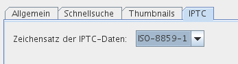

Stellen Sie hier ein, mit welchem Zeichensatz die IPTC-Daten kodiert sind. Leider schreiben dies nicht alle Programme (zuverlässig) in die IPTC-Daten selbst. Ist der Zeichensatz falsch, werden beispielsweise Umlaute verkehrt angezeigt und Sie können nicht danach suchen (außer, Sie geben die gleichen Hieroglyphen
ein, die falsch angezeigt werden).